2026
TVで紹介！
STEAM / ヌメヌメ×おにごっこアクション
ガーデンハントGarden Hunt
曲がり角には気を付けて…！ ナメツムリの少女「メイナ」が庭園迷路を駆け回る、ドットイート風ヌメヌメ×おにごっこアクション。
- Steam
- 500円
- 9言語対応
- 日本語フルボイス
つくった作品
Steam のゲームから、アナログゲーム、工芸×ゲームのアート作品、AR 作品まで。カードをクリックすると詳細が見られます！
STEAM / ヌメヌメ×おにごっこアクション
曲がり角には気を付けて…！ ナメツムリの少女「メイナ」が庭園迷路を駆け回る、ドットイート風ヌメヌメ×おにごっこアクション。
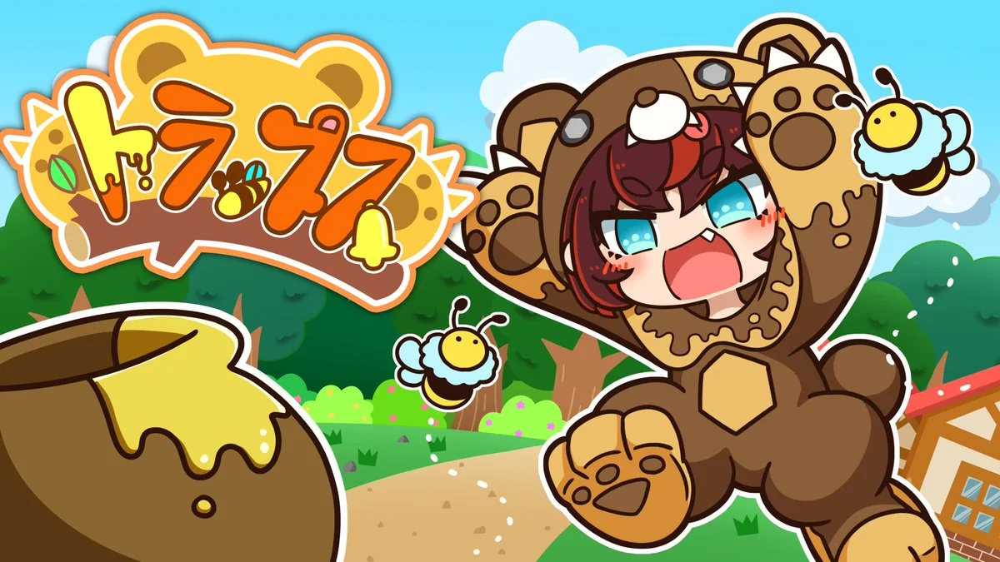
ANALOG GAME / カードタイプの2人対戦ゲーム
いたずら好きな「クマチ」から村を守れ！ 罠を活用して相手の村にクマチを押し込む、カードタイプの2人対戦ゲーム。
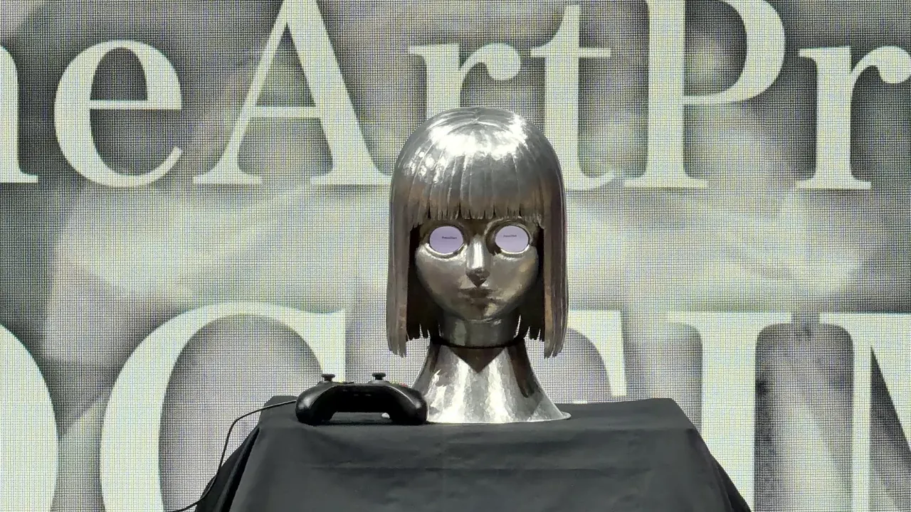
GAME ART PROJECT / 工芸×ゲーム
「そこにいるの？ 一緒に遊ぼう？」と語りかける銅の少女。頬に触れて体温を伝え、ピンポンのラリーで“対話”する、工芸×ゲームのゲームアート。
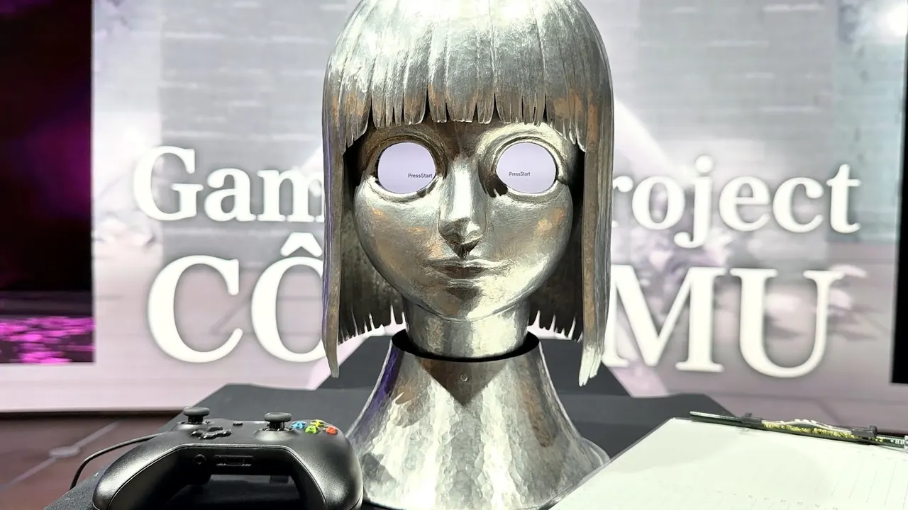
GAME ART PROJECT / 工芸×ゲーム
アルミニウムの鍛金でつくられた少女の「瞳」をのぞき込み、その奥の「ココロノセカイ」でかくれんぼ。作品「と」遊ぶ、工芸×ゲームのゲームアート。
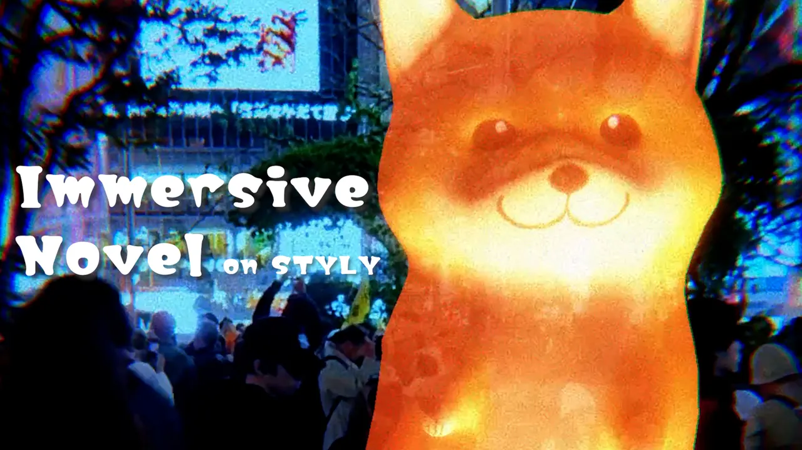
AR NOVEL / サイトスペシフィック AR
渋谷のスクランブル交差点で、とあるイヌの幽霊と出会う。AR で「体験できる小説」。
STEAM・ブラウザ / ラン＆ジャンプ＆クラフト
走って、飛んで、積み木を集めて…乗り物をクラフト！ クラフトでスコアを一気に稼ぐアクションゲーム。
STEAM / 筋トレアクションRPG
ぶんまわして、ぶっとばして、休憩！？ 休むほど筋肉がつき、木も岩も魔獣も武器になる爽快アクションRPG。
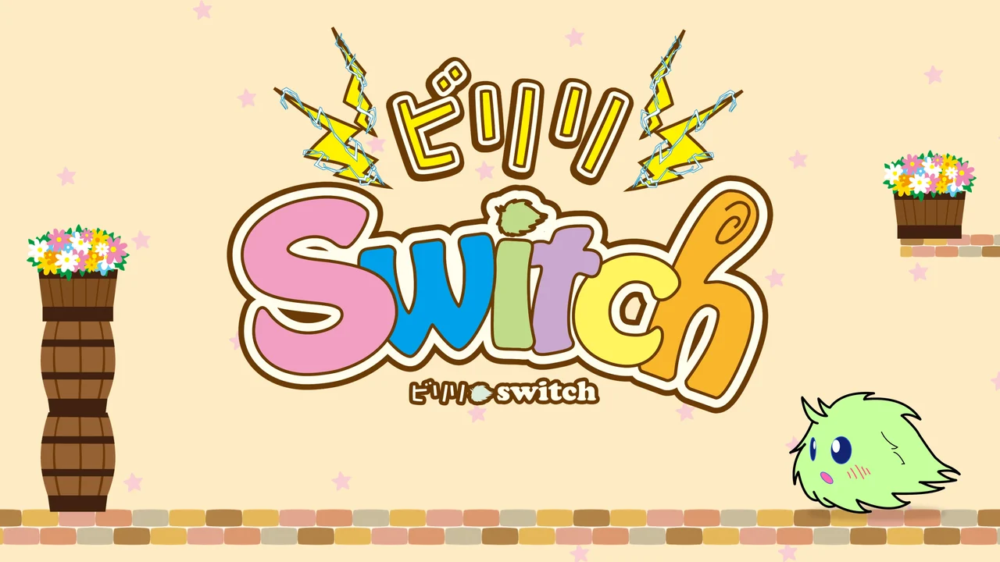
MOBILE GAME / パズルアクション
タップで2つのライトを切り替えて、光に向かって進む不思議な生きもの「フィリー」をゴールへ導くパズルアクション。明るいうちにステージを覚えて、暗やみで動きを読め！

MOBILE GAME / モグラ叩き
穴から顔を出すチンアナゴとニシキアナゴを叩きまくれ！ 独学でつくった処女作。BitSummit 2015 での展示が、ゲームクリエイターの道へ進むきっかけになりました。
カミエナってこんな人
「つくる」から「とどける」まで、
ぜんぶ全力。
インディーゲームクリエイターとして活動中！ インディーゲームスタジオ「クレアクラン」の代表として、チーム制作でのディレクション・プロデュースを主に担当しています。チームやプロジェクトに応じて、企画・シナリオ・プログラム・絵作り・UIデザインまで幅広く手を動かすことも。
「楽しいを届ける」を軸に、「kawaii × クセになる遊び」なゲームづくりがモットー。ただ「創る」だけでなく、作品を“届ける”ところまでをモノづくりの一環と捉えて、その過程すべてにこだわって取り組んでいます。
ゲームづくりの原点は、独学でつくった処女作『ちんあなご』。学生時代に BitSummit で展示した経験をきっかけに、ゲーム制作にのめり込みました。最近は工芸や AR と組み合わせた、ゲームの枠からはみ出す作品にも挑戦中。ゲーム制作以外にも、クリエイター向けラジオやイベントの企画運営も行っています。
チームの舵をとり、作品の「おもしろい」の芯を決める。
企画から配信・出展・PR まで、作品を届ける道すじをつくる。
遊びのアイデアと、キャラクター・物語づくり。
Unity を使ったゲームの実装。
「kawaii」な画づくりと、遊びやすい UI。
イベントの企画運営や、クリエイター向けトークラジオ。
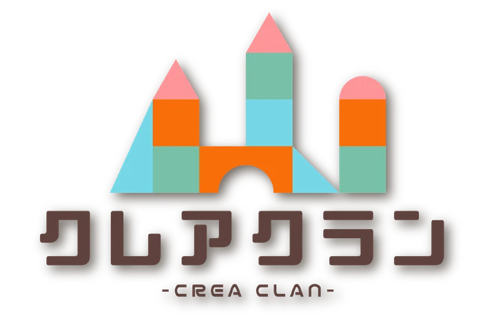
kawaii をキーワードに活動するインディーゲームスタジオ。2020年に立ち上げ、Steam やスマホアプリなど複数のプラットフォームでゲームを配信。コミックマーケットや東京ゲームダンジョンなどのイベントにも出展しています。
クレアクラン公式HPクレアクランの看板娘
これまでのあゆみ
新しい順に並べています。
『PRJ CÔGEIMU』公式サイトを公開、第2作「02 Kagane」『ARE YOU THERE?』を発表
コミックマーケット108 に出展
『ガーデンハント』パッケージ版と、メイナ・クレア・クマチの新作ちびキャラアクスタを頒布。
BSフジ『界隈ほーる』#10「インディーゲーム界隈」第2弾に出演
新作アナログゲーム『トラップス』のキービジュアルを公開
クリエイター向けラジオ「クレアクランカフェ」チャンネル登録者 1,000人突破
『ガーデンハント』が渋谷サクラステージ「404 Not Found」で筐体展示（〜7月）
国際シンポジウム「ゲーム・プレイング・ソサエティを考える」に登壇
art bit #6 連動企画（立命館大学 衣笠キャンパス）。同時に art bit #6（ホテル アンテルーム 京都）で『CÔGEIMU』プロトタイプVer2 を展示。
BSフジ『界隈ほーる』#4「インディーゲーム界隈」に出演
スタジオで近藤春菜さんが『ガーデンハント』をプレイ。
東京ゲームダンジョン12 に出展
SHIBUYA GAMES WEEK 2026 に2作品を出展
『ガーデンハント』（エキマエゲームパーク）と『CÔGEIMU』（404ゲームセンター）。
NHK「首都圏ネットワーク」で『CÔGEIMU』が紹介される
『ガーデンハント』Steam で発売！
9言語対応・日本語フルボイス。
インタビュー番組「天瀬モモの社会見学」ゲームクリエイター編に出演
コミックマーケット107 で『ガーデンハント』完成版をパッケージで先行頒布
初めてのパッケージ版。メイナ役・柊 優花さんのサイン入り限定版は完売。
『CÔGEIMU』プロトタイプ発表展示会＆ゲームアートトーク
渋谷サクラステージ「404 Not Found」にて。
東京ゲームダンジョン10、SAKURA CREATOR'S MARKET XG に出展
コミックマーケット106、東京ゲームダンジョン9 に出展
『ガーデンハント』β版ROMはディスク版・ダウンロード版ともに完売。
『ガーデンハント』Steam ストアページを公開
『走れ！クレアちゃん』30,000 ダウンロード突破！
東京ゲームダンジョン8 に初出展、正式タイトル『ガーデンハント』が決定
DMM.com 本社で開催された「ゲーム世界展開会議」でもブース展示。
『Immersive Novel』が NEWVIEW AWARDS 2024 GOLD PRIZE（最優秀賞）を受賞
10か国以上・90作品以上の中から選出。NEWVIEW FEST 2024（渋谷PARCO「GALLERY X」ほか）で展示。
クリエイター向けラジオ「クレアクランカフェ」をスタート
『PRJ rain』α版を BOOTH でダウンロード販売
コミックマーケット105 で新作『PRJ rain』α版ROMを頒布（完売）
コミックマーケット104 で『rain（仮）』プロト版を初頒布
コミックマーケット103 に出展（ゲームROM完売）
『走れ！クレアちゃん』Steam 版を配信、コミックマーケット102 に出展
新作の主人公「メイナ」をブースで初お披露目。
『走れ！クレアちゃん』スマホアプリ版をリリース
INDIE Live Expo 2020 で『ぶんまわしヒーロー』が紹介される
インディーゲームサークル「クレアクラン」を立ち上げ
1作目『走れ！クレアちゃん』を unity1week 参加作として unityroom で公開。
コミックマーケット97 に出展して『ビリリスイッチ』を発表、『ぶんまわしヒーロー』17,000ダウンロード突破
『ぶんまわしヒーロー』Steam で無料配信スタート
卒業制作展で『ぶんまわしヒーロー』を展示
東京ゲームショウ2018 インディーゲームコーナーに『ぶんまわしヒーロー』を出展
Connect Fest 2018（京都）で『ぶんまわしヒーロー』を展示
処女作『ちんあなご』（モグラ叩きゲーム）を制作
BitSummit での展示をきっかけに、ゲームクリエイターの道へ。
ゲーム制作以外のこと
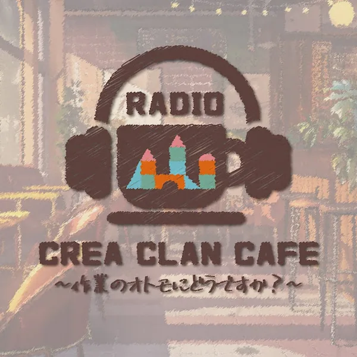
RADIO
ここはクリエイターが集まる喫茶店…。ゲーム・イラスト・音楽・VTuber など、さまざまなジャンルのクリエイターをゲストに、こだわりや考え方を深ぼるトークラジオ。チャンネル登録者 1,000人突破！
YouTube で聴く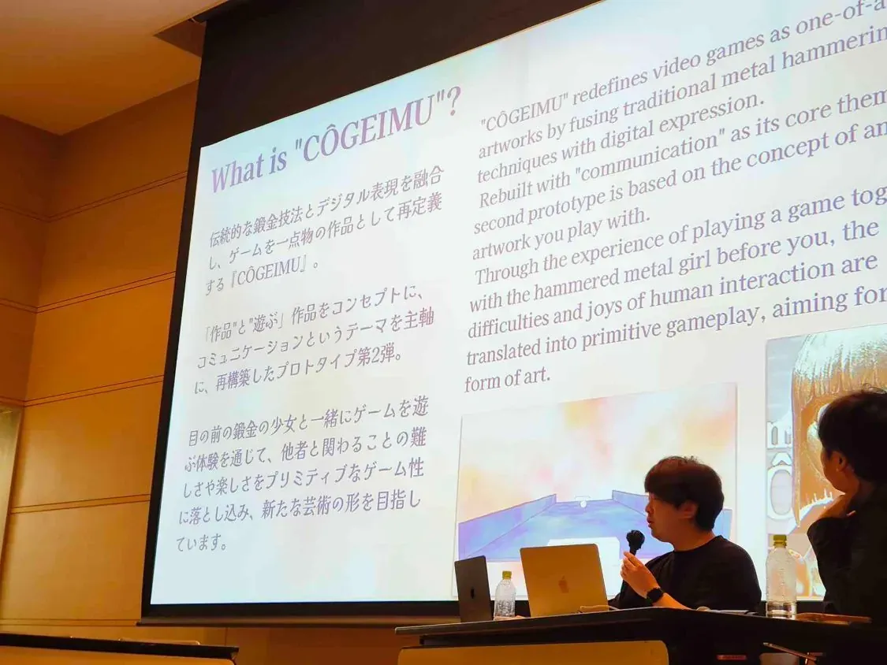
TALK
国際シンポジウム「ゲーム・プレイング・ソサエティを考える」（2026・立命館大学）や、『CÔGEIMU』のゲームアートトーク（2025・渋谷）に登壇。アート×ゲーム表現のこれからについて話しています。
CÔGEIMU 公式サイトへ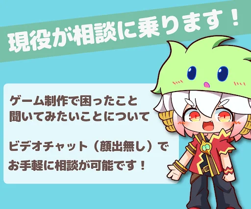
CONSULTATION
「何から始めればいい？」「チーム制作の仲間はどう探す？」など、ゲーム制作の相談にのっています。ビデオチャット（顔出しなし）でお気軽に。
ココナラで見る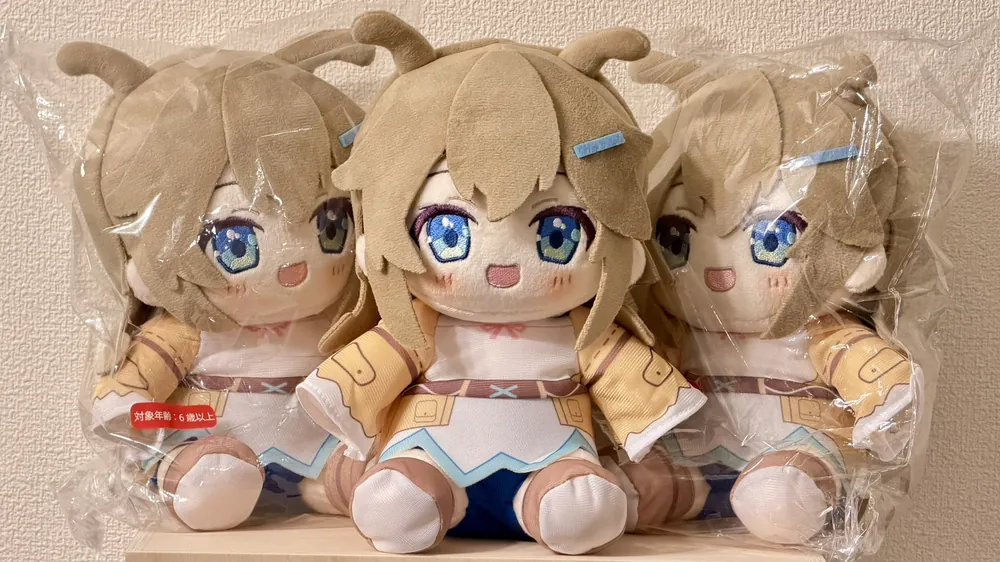
GOODS
メイナのフィギュアやぬいぐるみ、ちびキャラアクスタなど、kawaii なグッズを制作。イベントで頒布したゲームやグッズを BOOTH でも販売しています。
BOOTH を見るQUESTION BOX
ゲームの感想、制作の質問、ラジオのお便りなど、匿名で気軽にどうぞ！ いただいた内容はラジオで紹介するかも。
質問を送る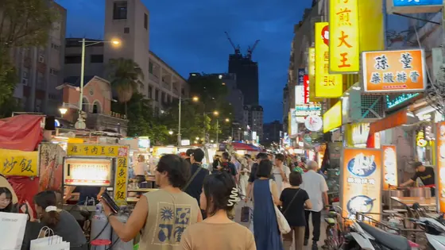
TRIPCREATOR DIARYDIARY
海外旅行が好きで、台湾・エジプト・バリ島など旅先での発見を「#ゲームクリエイターの〇〇旅行」としてレポート。X の投稿を、旅行ごとにまとめて見られます。
旅行記を見る出演・掲載メディア
クリックすると、それぞれの番組・記事・動画が開きます。
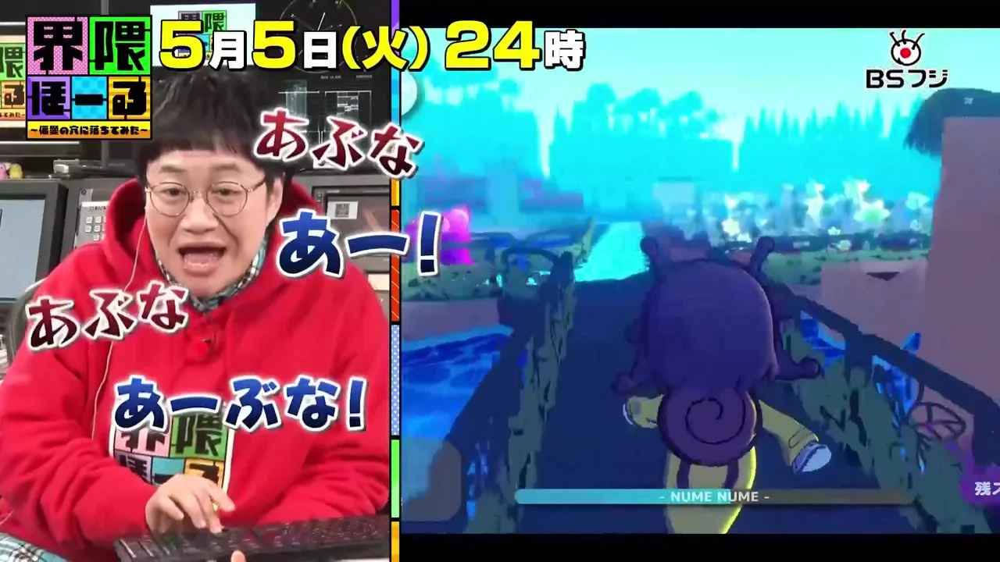
BSフジ
界隈ほーる 〜偏愛の穴に落ちてみた〜 #4「インディーゲーム界隈」
インディーゲームクリエイターとして出演。スタジオでは近藤春菜さんが『ガーデンハント』をプレイ！
しっかり楽しんでもらえて、「500円でこんなに熱く遊べるのはすごい」と喜んでもらえたのが、とてもうれしかったです。

BSフジ
界隈ほーる 〜偏愛の穴に落ちてみた〜 #10「インディーゲーム界隈」第2弾
BitSummit を取材したインディーゲーム特集の第2弾に出演。
NHK
首都圏ネットワーク「おでかけしゅと犬くん」
SHIBUYA GAMES WEEK 2026 での『CÔGEIMU』の展示が紹介されました。

天瀬モモの社会見学インタビュー
ゲームクリエイター編：カミエナに、ゲームづくりのこだわりや『ちんあなご』の思い出までインタビュー

INDIE Live ExpoCÔGEIMU
女の子の“瞳”をのぞきながら遊ぶゲーム「CÔGEIMU」（ショート動画）

INDIE Live ExpoSHIBUYA GAMES WEEK
渋谷がゲーセン化！？ SHIBUYA GAMES WEEK 2026 潜入取材

フェイチャンネルSHIBUYA GAMES WEEK
SHIBUYA GAMES WEEK 2026 内覧会 Vlog

プテラたかはしSHIBUYA GAMES WEEK
渋谷のゲームイベントで遊んでみた！

INDIE Live Expo 2020ぶんまわしヒーロー
『ぶんまわしヒーロー』が紹介されました（紹介パートから再生）